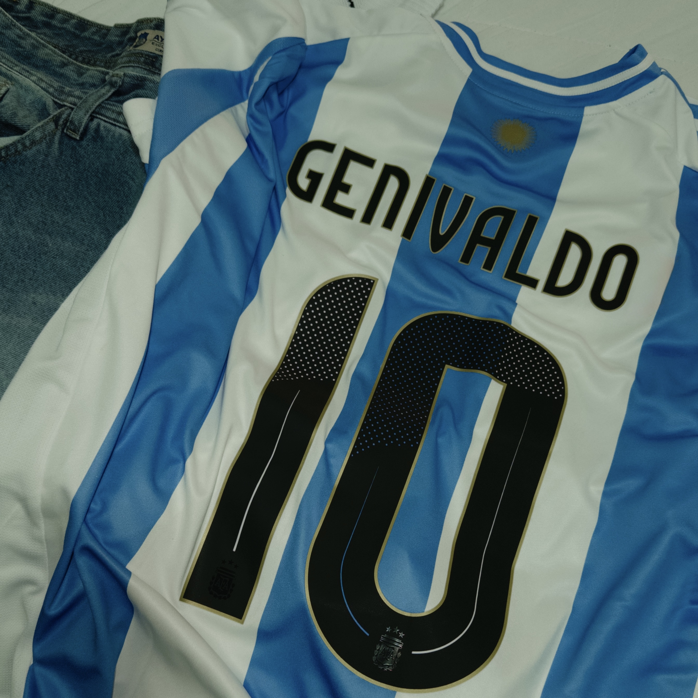

01/06/2023
"Just me in Ushuaia-Argentina"

02/06/2024
"My favorite country before of Brazil."
03/06/2024
"My other love."

04/06/2024
"My favorite headphone of life."
01/06/2023
"Just me in Ushuaia-Argentina"
02/06/2024
"My favorite country before of Brazil."
03/06/2024
"My other love."
04/06/2024
"My favorite headphone of life."
I’m a developer with a deep enthusiasm for crafting digital experiences that are as intuitive as they are impactful. My focus lies in web and iOS development, always aiming to create products that feel smooth, functional, and genuinely enjoyable to use.
In recent years, I’ve also been engaged in supporting Brazil’s growing developer community—sharing insights on UI design, frontend technologies, and iOS development. I value the power of thoughtful design and how it shapes the way we interact with technology daily.
At my core, I’m driven by the ambition to build world-class applications. Recognition matters, but what truly motivates me is the potential to make a meaningful difference in people’s lives through what I create.